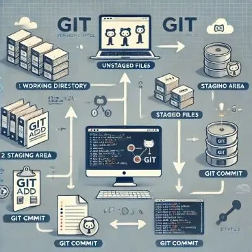
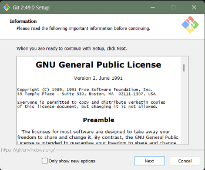
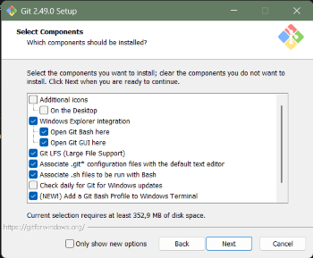
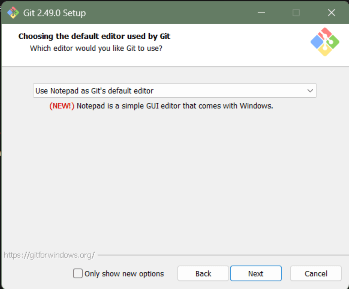
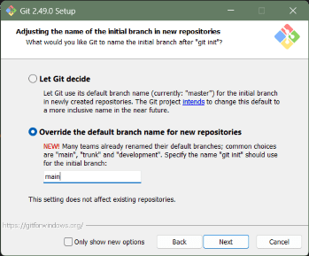
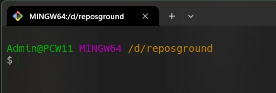
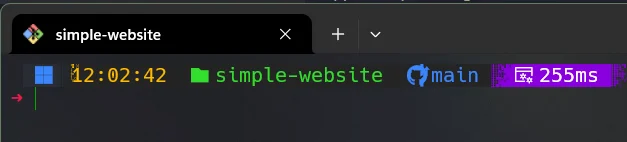

O Git Bash é um aplicativo para Windows que fornece uma camada de emulação para usar o Git via linha de comando. Ele permite executar comandos Git de forma prática e eficiente, simulando um ambiente Unix dentro do Windows.





As imagens acima mostram as opções recomendadas durante a instalação do Git no Windows.
Após a instalação, o Git Bash estará disponível no Terminal do Windows, como mostrado abaixo:

A imagem abaixo mostra o mesmo Bash personalizado com o tema Oh My Posh:

Na página inicial do curso, apresentamos as definições fundamentais do Git.
Seguiremos um roteiro baseado no livro "Practical Guide to Git and GitHub For Windows Users", de Roberto Vormittag.
Este curso adota a mesma filosofia do livro, com explicações claras e exemplos práticos.
Também utilizaremos representações visuais dos comandos Git, alinhadas às imagens dos terminais.